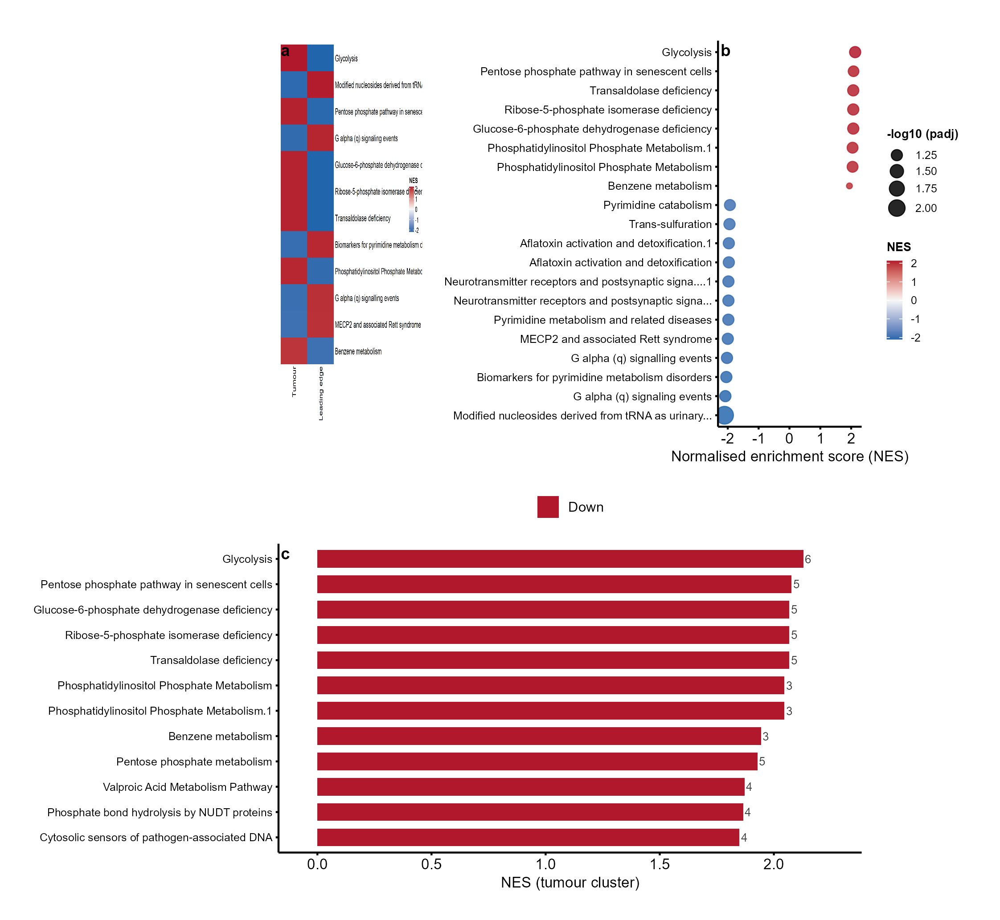
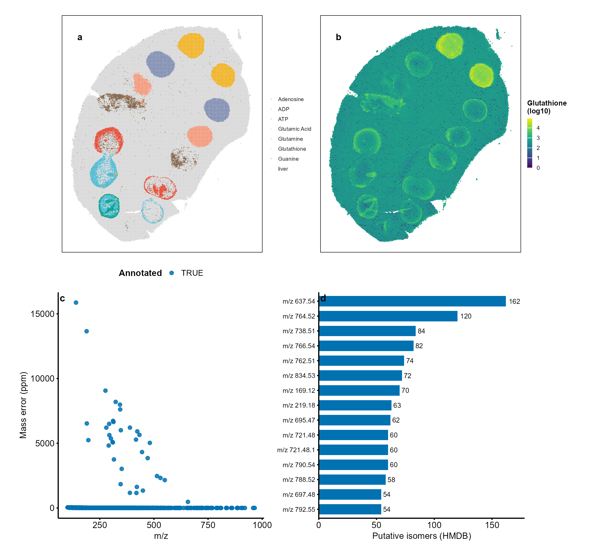

Recreating a Published Figure: SpaMTP Spatial Metabolomics
Lucas VHH Tran
2026-10-17
Source:vignettes/recreate-spamtp.Rmd
recreate-spamtp.RmdOverview
This vignette recreates key figures of the SpaMTP manuscript in Nature Methods using cliomicplot plot types and the paper’s public datasets:
Wemans IS, Soares M, et al. SpaMTP: a framework for spatial metabolomics data integration and analysis. Nature Methods. 2026. DOI: 10.1038/s41592-026-03140-8.
SpaMTP is an R/Bioconductor framework that integrates MALDI mass spectrometry imaging (MSI) metabolomics with spatial transcriptomics. We recreate four composites covering its four showcase analyses:
| Figure | Dataset | Paper panels |
|---|---|---|
| 1 | Mouse urinary bladder MALDI-MSI (PRIDE PXD001283) |
Fig. 2C-G |
| 2 | Parkinson mouse brain: Visium + MALDI-MSI | Fig. 2H-N, S3 |
| 3 | Human brain tumour single-cell multi-omics (pathways) | Fig. S5 |
| 4 | Spotted mouse liver MALDI-MSI (METASPACE) | Fig. S6 |
All figures below are rendered at 300 dpi in Nature style: no in-figure titles, bold lowercase panel labels, black text on white, thin black axes.
Data availability
All datasets are public and CC-BY-4.0 licensed. The processed Seurat objects used for the vignettes are mirrored on the SpaMTP Zenodo community:
| Analysis | Zenodo record (SpaMTP community) | Original source |
|---|---|---|
| Mouse urinary bladder | SpaMTP: Mouse Bladder dataset | PRIDE PXD001283 |
| Multi-omic mouse brain | SpaMTP: Multi-Omics Mouse Brain dataset | SciLifeLab 10.17044/scilifelab.22770161.v2 |
| Human brain tumour pathways | SpaMTP: Human Brain Tissue Single Cell dataset | BioImage Archive S-BIAD14260 |
| Spotted mouse liver | SpaMTP: Mouse Liver with Spotted Chemical Standards dataset | METASPACE 2020-12-07_03h16m14s |
library(cliomicplot)
library(ggplot2)
clipar(stat.test = NULL)
# Resolve bundled analysis tables (small; the raw Seurat objects are ~90 MB
# and are re-downloaded from Zenodo by the build script on demand)
resolve_spa_data = function(filename) {
pkg_path = system.file("extdata", "spamtp_paper", filename, package = "cliomicplot")
if (pkg_path != "" && file.exists(pkg_path)) return(pkg_path)
fallback = file.path("..", "inst", "extdata", "spamtp_paper", filename)
if (file.exists(fallback)) return(fallback)
file.path("inst", "extdata", "spamtp_paper", filename)
}
load_spa = function(filename) {
e = new.env(parent = emptyenv())
load(resolve_spa_data(filename), envir = e)
as.list(e)
}The full pipeline (Seurat extraction + DE analysis + all panels + the four composites) is reproducible with one command:
Figure 1 - Mouse urinary bladder MALDI-MSI
The paper’s bladder analysis segments the MALDI-MSI tissue into three anatomical regions (adventitia, muscle, urothelium) and identifies region-specific lipid dysregulation. Panel (a) is the segmentation map, (b) spatial intensities of SM(34:1) and PC(34:1), (c) per-region MZBoxPlot, (d) a logFC heatmap of differentially expressed metabolites (DEMs), (e) a volcano of muscle vs urothelium, and (f) a circular plot of lipid-class shifts.

Recreated Figure 1 (mouse urinary bladder MALDI-MSI, paper Fig. 2C-G). Panel a: tissue segmentation. Panel b: SM(34:1)/PC(34:1) spatial intensity. Panel c: per-region intensity boxplots. Panel d: DEM logFC heatmap. Panel e: muscle-vs-urothelium volcano. Panel f: lipid-class circular shift.
The DEM heatmap and the volcano are single cliplot()
calls:
d = load_spa("spa_bladder.rda")
# (d) top DE metabolites across the three regions
regs = c("2", "5", "6")
top = do.call(rbind, lapply(regs, function(r) {
dd = d$dem[d$dem$cluster == r, ]
head(dd[order(-abs(dd$logFC)), ], 12)
}))
mat = reshape2::acast(d$dem[d$dem$feature %in% unique(top$feature), ],
feature ~ cluster, value.var = "logFC")
cliplot(mat[, regs, drop = FALSE],
type = type_heatmap(scale = "none", cluster_rows = FALSE,
cluster_cols = FALSE, show_rownames = TRUE,
show_colnames = TRUE, legend_title = "logFC"),
theme = "nature")
# (e) muscle (5) vs urothelium (6) volcano
cliplot(-log10(adj.P.Val) ~ logFC, data = d$vol,
type = type_volcano(pval_cutoff = 0.05, fc_cutoff = 1,
label_genes = c("SM(34:1)", "PC(34:1)")),
theme = "nature") +
labs(x = "logFC (muscle vs urothelium)", y = "-log10 (adj. P)")The key biology reproduces: SM(34:1) is enriched in the muscle layer while PC(34:1) is enriched in the urothelium, as reported in the paper.
Figure 2 - Multi-omic mouse brain (MSI + Visium)
The Parkinson mouse brain analysis pairs MALDI-MSI (dopamine at two derivatised m/z values) with 10X Visium transcriptomics. Panel (a, f) show dopamine spatial intensity (m/z 674.28 and 421.19), (b) the Visium anatomical annotations, (c) a PCA of Visium transcriptomes, (d) the striatum volcano (lesioned vs intact), and (e) a heatmap of the top striatal DEGs.

Recreated Figure 2 (multi-omic mouse brain, paper Fig. 2H-N and S3). Panel a: MSI dopamine (m/z 674.28). Panel b: Visium anatomical annotations. Panel c: Visium PCA. Panel d: striatum volcano. Panel e: top-DEG heatmap. Panel f: MSI dopamine (m/z 421.19).
The top-DEG heatmap uses row-scaled expression means:
v = load_spa("spa_brain_visium.rda")
mat = v$means[v$top_genes, c("Lesioned", "Intact"), drop = FALSE]
mat = mat[order(-abs(mat[, 1] - mat[, 2])), , drop = FALSE]
cliplot(mat[seq_len(min(18, nrow(mat))), , drop = FALSE],
type = type_heatmap(scale = "row", cluster_rows = FALSE,
cluster_cols = FALSE, show_rownames = TRUE,
show_colnames = TRUE, legend_title = "row z"),
theme = "nature")The striatal DEG list reproduces the expected biology, with Penk, Pdyn, Tac1 and Cartpt among the top lesioned-vs-intact changes.
Figure 3 - Human brain tumour pathway analysis
The single-cell tumour analysis runs metabolite-set enrichment per cluster. Panel (a) is an NES heatmap of the top pathways in the tumour cluster and its leading-edge companion cluster, (b) a dot plot of NES against significance for the tumour cluster, and (c) the top tumour pathways with their leading-edge metabolite counts.

Recreated Figure 3 (brain tumour pathway analysis, paper Fig. S5). Panel a: NES heatmap. Panel b: NES vs significance dot plot. Panel c: top tumour pathways with leading-edge metabolite counts.
t = load_spa("spa_tumour_pathways.rda")
dt = t$dt[!is.na(t$dt$padj) & t$dt$padj < 0.25, ]
top = do.call(rbind, lapply(c("tumour", "leading edge"), function(cl) {
dd = dt[dt$Cluster_id == cl, ]
head(dd[order(-abs(dd$NES)), ], 12)
}))
mat = reshape2::acast(dt[dt$pathwayName %in% unique(top$pathwayName), ],
pathwayName ~ Cluster_id, value.var = "NES",
fun.aggregate = mean)
cliplot(mat,
type = type_heatmap(scale = "none", cluster_rows = FALSE,
cluster_cols = FALSE, show_rownames = TRUE,
show_colnames = TRUE, legend_title = "NES"),
theme = "nature")Glycolysis, the pentose phosphate pathway and related tumour-metabolism pathways emerge as the top positively enriched pathways in the tumour cluster.
Figure 4 - Spotted mouse liver MALDI-MSI
The liver experiment deposits chemical standards on the tissue to benchmark MALDI annotation. Panel (a) shows the tissue plus spotted standards, (b) the spatial intensity of the glutathione standard, (c) the annotation mass error (ppm) across the m/z range, and (d) the top features by number of putative HMDB isomer annotations.

Recreated Figure 4 (spotted mouse liver MALDI-MSI, paper Fig. S6). Panel a: tissue + chemical standards. Panel b: glutathione spatial intensity. Panel c: annotation mass error (ppm). Panel d: top features by putative isomer count.
l = load_spa("spa_liver.rda")
# (c) annotation mass error across the m/z range
ggplot(l$qc, aes(mz, ppm, colour = annotated)) +
geom_point(size = 1.4, alpha = 0.85) +
scale_colour_manual(values = c("TRUE" = "#0072B2", "FALSE" = "#BBBBBB")) +
cliomicplot:::theme_cli_nature(base_size = 9) +
labs(x = "m/z", y = "Mass error (ppm)")Reproducibility notes
- Raw processed Seurat objects (~90 MB) are downloaded once from the
SpaMTP Zenodo community into
inst/extdata/spamtp_paper/raw/byinst/extdata/build_spamtp_figures.R; derived analysis tables are cached as.rdabundles ininst/extdata/spamtp_paper/so re-runs are offline. - All spatial panels use
geom_point()scatter maps withcoord_equal(); all composites are assembled withpatchworkat 300 dpi. - Metabolite annotation databases cited by the paper: HMDB (released 2021-11-02), ChEBI (2023-09-01), LIPID MAPS (2023-09-15) and GNPS (2025-04-21).